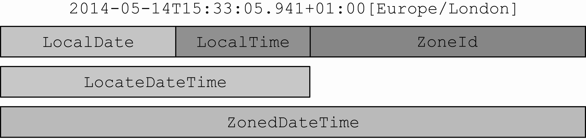

Java 的 API 提供了很多有用的组件，能帮我们构建复杂的应用。比如日期处理，Java 从 1.0，就提供了 java.util.Date 类用于支持日期和时间的处理，不过由于该 API 设计的缺陷，产生了糟糕的易用性。随着 1.0 退出舞台，Date 类中的很多方法都被废弃了，Java 1.1 使用 java.util.Calendar 类取而代之，很不幸，Calendar 类也有类似的问题和设计缺陷，导致使用这些方法写出的代码非常容易出错。
所有这些缺陷和不一致导致用户们转投第三方的日期和时间库，比如 Joda-Time。为了解决这些问题，Oracle 决定在原生的 Java API 中提供高质量的日期和时间支持。你会看到 Java 8 在 java.time 包中整合了很多 Joda-Time 的特性。
在开始介绍日期类之前，我们先陈述几个经常出现的名次：
UTC
协调世界时，是最主要的世界时间标准，基于原子钟。
在 UTC 中，大约每一年或两年会多出一秒，称为“闰秒”，添加到一天的最后一秒，并且总是在 12 月 31 日或 6 月 30 日。
GMT
格林尼治标准时间，代表时区，标准时间为 UTC+0，是之前的民间标准，根据地球的自转和公转来计算时间，在欧洲国家和非洲国家用做当地标准时间。
GMT 因为是根据地球的转动来计算时间的，而地球的自转目前正在缓速变慢，所以 UTC 比 GMT 更加精准。但是一些计算机的标准是根据格林尼治标准时间（GMT）定义的，所以大多数计算机时钟不够精确。
在民用领域可以认为两者相同。
CST
北美中部时区，代表时区，标准时间为 UTC-6。
这种缩写的时区代表一片区域，但是由于没有明确的标准，CST 概念来说在中国也代表中国标准时间。具体缩写的定义可以查看 ZoneId.SHORT_IDS 定义。
所以 java 提供了明确的时区表示方法，具体可用的时区字符串 Id 可以通过 ZoneId.getAvailableZoneIds() 方法查看。
ISO 8601
代表国际标准的日期和时间表示方法。
日期格式一般为：yyyy-MM-dd；
带时区的日期一般格式为：yyyy-MM-dd’T’HH:mm:ss.SSSZ。
在 Java 中定义了一些参见的格式化表示方法，在 DateTimeFormatter 有具体的静态格式化类表示。
UNIX 纪元（Epoch）
代表 1970 年 1 月 1 日 0 时 0 分 0 秒 GMT 午夜
Date
Date 类表示特定的时刻，精度为毫秒，该类反映的是协调世界时（UTC），不反映时区。
该类在使用时有几点需要注意：
- 该时刻表示的当前时间与纪元的差（以毫秒为单位）；
- 年代表与 1900 的差
- 一个月由 0 到 11 之间的整数表示；0 是一月，1 是二月，以此类推；
- 日期（一个月中的一天）由 1 到 31 之间的整数表示；
- 小时用 0 到 23 之间的的整数表示；
- 分钟用 0 到 59 之间的整数表示；
- 秒用 0 到 61 之间的整数表示；值 60 和 61 仅在闰秒出现；
- 使用 SimpleDateFormat 格式化显示，该类非线程安全。
- 该类是可变类，线程不安全。
使用
创建
创建当前时刻：new Date()，相当于：new Date(System.currentTimeMillis())，使用纪元时间与当前时间毫秒差创建日期。
使用 Java8 Instant 转换：Date.from(Instant instant)，内部还是使用纪元时间差，其它日期对象转换思想相同。
日期
Date 实现了 Comparable 接口，可以使用 compareTo 直接比较两个对象；
使用 after 和 before 实例方法；
文本间转换
使用 DateFormat 抽象类静态方法转换简单的 ISO 格式：
该抽象类非线程安全，由于使用了成员变量 calendar 维护内部时间状态，导致 format 等方法依赖状态。
1 | Date date = new Date(); |
或使用 DateFormat 实现类 SimpleDateFormat 基于 Pattern 形式转换：
该类非线程安全，原因和 DateFormat 相同。
| 字符 | 日期或时间元素 | Presentation | Examples |
|---|---|---|---|
| G | Era 年代 | Text | AD |
| y | 年 | Year | 1996; 96 |
| Y | Week year | Year | 2009; 09 |
| M | 一年中的月份 (上下文敏感) | Month | July; Jul; 07 |
| L | 一年中的月份 (独立格式) | Month | July; Jul; 07 |
| w | 一年中的周 | Number | 27 |
| W | 一月中的周 | Number | 2 |
| D | 一年中的天 | Number | 189 |
| d | 一月中的天 | Number | 10 |
| F | 每月的星期几 | Number | 2 |
| E | Day name in week | Text | Tuesday; Tue |
| u | 星期几 (1 = 星期一, …, 7 = 星期天) | Number | 1 |
| a | Am/pm 标记 | Text | PM |
| H | 小时 (0-23) | Number | 0 |
| k | 小时 (1-24) | Number | 24 |
| K | 基于上午/下午表示的时间 am/pm (0-11) | Number | 0 |
| h | 基于上午/下午表示的时间 am/pm (1-12) | Number | 12 |
| m | 分钟 | Number | 30 |
| s | 秒 | Number | 55 |
| S | 毫秒 | Number | 978 |
| z | 时区 | 一般时区 | Pacific Standard Time; PST; GMT-08:00 |
| Z | 时区 | RFC 822 时区 | -0800 |
| X | 时区 | ISO 8601 时区 | -08; -0800; -08:00 |
1 | SimpleDateFormat simpleDateFormat = new SimpleDateFormat("yyyy-MM-dd'T'HH:mm:ss.SSSZ"); |
Calendar
该类是一个抽象类，和 Date 一样，代表特定的时刻，该类提供了一些操作日历字段的方法，比如获得下一周的日期。
该类使用时需要注意一下几点：
- 支持指定时区和区域构造日历。最常见的实现是 GregorianCalendar，代表公历；
- 该时刻表示的当前时间与纪元的差（以毫秒为单位）；
- 年份不再从 1900 年开始，月份依旧从 0 开始计算；
- 没有专门的文本格式转换，通过 Date 作为中转；
- 该类是可变类，线程不安全。
使用
创建
- 使用静态工厂方法获取基于系统时区的当前时刻：
1 | Calendar rightNow = Calendar.getInstance(); |
- 使用静态内部类构建器构建时间日历：
1 | new Calendar.Builder() |
Date转Calendar
1 | final Calendar calendar = new Calendar.Builder().setInstant(d).build(); |
比较
该类同样实现了 Comparable 接口，可以使用 compareTo 直接比较两个对象；
使用 after 和 before 实例方法；
修改字段
通过 set(int field, int value) 修改当前日历对象字段，第一个参数为字段类型，定义在类的静态常量中：
ERA, YEAR, MONTH(JANUARY, FEBRUARY, MARCH, APRIL, MAY, JUNE, JULY, AUGUST, SEPTEMBER, OCTOBER, NOVEMBER, DECEMBER, UNDECIMBER), WEEK_OF_YEAR, WEEK_OF_MONTH, DATE, DAY_OF_MONTH, DAY_OF_YEAR, DAY_OF_WEEK(SUNDAY, MONDAY, TUESDAY, WEDNESDAY, THURSDAY, FRIDAY, SATURDAY), DAY_OF_WEEK_IN_MONTH, AM_PM, HOUR, HOUR_OF_DAY, MINUTE, SECOND, MILLISECOND, ZONE_OFFSET, DST_OFFSET
1 | Calendar rightNow = Calendar.getInstance(); |
或者 set(int year, int month, int date, int hourOfDay, int minute) 和 set(int year, int month, int date) 等。
增加或降低字段值：add(int field, int amount)；
滚动增加或减小某个单位值，不影响前一个字段值：roll(int field, boolean up)
1 | // create a calendar |
new package java.time
该包中定义的类代表基本的日期时间概念，包括瞬间，持续时间，日期，时间，时区和时间段。它们基于 ISO 日历系统（公历）。所有的类都是不可变的并且是线程安全的。
每个日期实例都是由方便获取的字段 API 组成。对于较低级别的字段访问，可以参考 java.time.temporal 包。每个类都支持打印和解析为各种日期和时间，具体参阅 java.time.format 包以获取自定义选项。
java.time.chrono 包包含日历中立 API ChronoLocalDate，ChronoLocalDateTime，ChronoZonedDateTime 和 Era，这些类可以用来构建地区化的日历系统，比如农历等，系统内置提供了 4 中日历系统，分别是：
ThaiBuddhistDate：泰国佛教历MinguoDate：中华民国历JapaneseDate：日本历HijrahDate：伊斯兰历
package java.time.temporal
我们可以使用字段、单位和日期时间调节器来访问日期和时间。
该程序包在基本程序包上扩展，以提供更多功能来满足更强大的用例。支持包括：
- 日期时间单位，例如年，月，日和小时
- 日期时间字段，例如一年中的某月，一周中的某日或一天中的某小时
- 日期时间调整功能
- 周的不同定义
字段和单位
日期和时间以字段和单位表示。单位用于测量时间量，例如年，天或分钟。所有单位都实现 TemporalUnit。众所周知的单位集在 ChronoUnit 中定义，例如 DAYS。该单位中也定义了一些常用的单位操作 API，例如：
- addTo(R temporal, long amount) - 添加指定时间段
- between(Temporal temporal1Inclusive, Temporal temporal2Exclusive) - 比较两个时间对象之间的时间
- isSupportedBy(Temporal temporal) - 指定时间对象是否支持此单位
字段用于表示较大日期时间的一部分，例如年，一年中的月或一分钟中的秒。所有字段都实现 TemporalField。在 ChronoField 中定义了一组众所周知的字段，例如 HOUR_OF_DAY。其他字段由 JulianFields，WeekFields 和 IsoFields 定义。该字段也有一些常用的 API，例如：
- getFrom(TemporalAccessor temporal) - 从指定的时间对象获取此字段的值
- isSupportedBy(TemporalAccessor temporal) - 检查时间对象是否支持此字段
- range() - 获取此字段的有效范围
字段的一种用法是从时间对象中获取没有便利方法的字段。例如，获取月中的某天很常见，以至于 LocalDate 上有一个名为 getDayOfMonth() 的方法。但是，对于更特殊的字段，必须使用该字段。例如，获取月中的周数，date.get(ChronoField.ALIGNED_WEEK_OF_MONTH)。
Temporal 作为支持字段的日期时间类型的抽象。其方法支持获取字段的值、创建修改字段值后的新日期时间以及查询其他信息（通常用于提取偏移量或时区）。
调整和查询
日期时间问题中的关键部分是将日期调整为新的相关值，例如“每月的最后一天”或“下一个星期三”。这些被建模为调整基准日期时间的函数。该函数实现 TemporalAdjuster 并在 Temporal 上运行。TemporalAdjusters 中提供了一组常用功能。例如，要查找给定日期后一周中某天的第一次出现，请使用 TemporalAdjusters.next(DayOfWeek)，例如 date.with(next(MONDAY))。
TemporalAdjuster 函数接口有一些常见的静态实现：
| 方法名 | 描述 |
|---|---|
| dayOfWeekInMonth | 创建一个新的日期，它的值为同一个月中每一周的第几天 |
| firstDayOfMonth | 创建一个新的日期，它的值为当月的第一天 |
| firstDayOfNextMonth | 创建一个新的日期，它的值为下月的第一天 |
| firstDayOfNextYear | 创建一个新的日期，它的值为明年的第一天 |
| firstDayOfYear | 创建一个新的日期，它的值为当年的第一天 |
| firstInMonth | 创建一个新的日期，它的值为同一个月中，第一个符合星期几要求的值 |
| lastDayOfMonth | 创建一个新的日期，它的值为当月的最后一天 |
| lastDayOfNextMonth | 创建一个新的日期，它的值为下月的最后一天 |
| lastDayOfNextYear | 创建一个新的日期，它的值为明年的最后一天 |
| lastDayOfYear | 创建一个新的日期，它的值为今年的最后一天 |
| lastInMonth | 创建一个新的日期，它的值为同一个月中，最后一个符合星期几要求的值 |
| next/previous | 创建一个新的日期，并将其值设定为日期调整后或者调整前，第一个符合指定星期几要求的日期 |
| nextOrSame/previousOrSame | 创建一个新的日期，并将其值设定为日期调整后或者调整前，第一个符合指定星期几要求的日期，如果该日期已经符合要求，直接返回该对象 |
TemporalAmount 接口模拟相对时间量，比如常用的实现类 Duration，Period。
除了调整日期时间外，还提供了一个接口以启用通过 TemporalQuery 进行查询。查询接口的最常见实现是方法引用。可以使用主要时间对象类上的 from(TemporalAccessor) 方法，例如 LocalDate::from 或 Month::from。在 TemporalQueries 中作为静态方法提供了进一步的实现。
1 | final ZonedDateTime now = ZonedDateTime.now(); |
周
不同的语言环境对星期有不同的定义。例如，在欧洲，一周通常从星期一开始，而在美国，则从星期日开始。 WeekFields 类为这种区别建模。IOS 定义星期一为一周开始，一周至少需要四天。
ISO 日历系统定义了一个额外的基于周的年划分。这定义了基于从一年整个星期一到星期一的一年，它是在 IsoFields 中建模的。
日期和时间
日期和时间类的接口都提供了一致的设计，所以再很多 API 上都做了通用的处理，比如一致的方法前缀：
of- 静态工厂方法parse- 侧重于解析的静态工厂方法get- 获取值或其它is- 检查是否为真with- 等同于 setter 的不可变修改，返回新的副本plus- 增加一定数量的单位minus- 减少一定数量的单位to- 将一个对象转换为另一个对象at- 将一个对象结合到该对象中，例如date.atTime(time)
这里主要以 Insant 展开介绍。
Instant
Instant 实质上是一个数字时间戳。可以从时钟（Clock）中获取当前的瞬时信息。这对于时间点的记录和持久化很有用，存储的结果与 System.currentTimeMillis()` 相关联。
创建
从 Date 获取：new Date().toInstant()；
使用静态工厂方法：
- 从系统时钟（Clock）构建：
Instant.now()，Instant.now(Clock clock) - 根据纪元差毫秒构建构建：
Instant.ofEpochMilli(long epochMilli) - 使用标准 ISO 格式字符串构建：
Instant.parse(CharSequence text)，格式例如：2007-12-03T10:15:30.00Z - 从 TemporalAccessor 实现类构建，该类可以为 Instant 或支持
INSTANT_SECONDS和NANO_OF_SECOND字段的实现类，比如：ZonedDateTime
比较
使用前需明确该对象支持的单位或字段类型，API 文档中有说明支持的类型；
或者使用：isSupported(TemporalUnit unit) 和 isSupported(TemporalUnit unit) 判断
-
比较与指定 Temporal 实现类指定单位的差：until(Temporal endExclusive, TemporalUnit unit)
-
使用 isAfter(Instant otherInstant) 或 isBefore(Instant otherInstant) 或 compareTo(Instant otherInstant)
获取
获取时间的字段值前同样得确认是否支持，这些方法通常以 get* 单位的形式存在，或者直接通过：
- get(TemporalField field)
- getLong(TemporalField field)
- 构建查询获取：query(TemporalQuery
query)
获取字段的有效值范围：range(TemporalField field)
调整
所有的修改方法都返回新的副本：
- 调整字段值：with(TemporalField field, long newValue)
- 截断操作会将小于该单位的字段都设置为 0：truncatedTo(TemporalUnit unit)
- 增加或减少某个字段：
plus*、minus* - 通过 TemporalAdjuster 函数接口实现调整：with(TemporalAdjuster adjuster)
LocalDate
LocalDate 存储没有时间的日期，也不附带时区信息。它会存储 yyyy-MM-dd 格式的日期，可以用来存储生日。
LocalTime
LocalTime 存储没有日期的时间。它将存储类似于 HH:mm:ss 格式的时间。
LocalDateTime
LocalDateTime 存储日期和时间。它将存储类似于 yyyy-MM-dd HH:mm:ss 格式的时间。
ZonedDateTime
ZonedDateTime 存储带有时区的日期和时间。如果要考虑到 ZoneId（例如“欧洲/巴黎”）对日期和时间进行准确的计算，这将很有用。如果可能，建议使用没有时区的简单类。时区的广泛使用往往会增加应用程序的复杂性。
该类存储类似于 yyyy-MM-dd HH:mm:ss.zzz 格式的时间。可通过上面所述时间类通过：atZone(ZoneId zone) 添加时区而来。
下图对 ZoneDateTime 的组成部分进行了说明。

持续时间和周期
Duration
持续时间是沿时间线以纳秒为单位的时间的简单度量。
此类以秒和纳秒为单位对时间量进行建模。也可以使用其他基于持续时间的单位（例如分钟和小时）来访问它。
创建
目前为止, 我们看到的所有类都实现了 Temporal 接口, Temporal 接口定义了如何读取和操纵为时间建模的对象的值。
Duration 类的静态工厂方法 between 就可以为两个 Temporal 对象创建持续时间。
1 | Duration d1 = Duration.between(time1, time2); |
也可以使用静态工厂从其它时间单位创建：
1 | Duration threeMinutes = Duration.ofMinutes(3); |
Period
周期以对人类有意义的单位表示时间量。例如年、月或天。
创建
使用静态工厂方法创建：
1 | Period tenDays = Period.between(LocalDate.of(2014, 3, 8), LocalDate.of(2014, 3, 18)); |
Duration 类和 Period 类共享了很多相似的方法，参见下表所示。
| 方 法 名 | 是否是静态方法 | 方法描述 |
|---|---|---|
| between | 是 | 创建两个时间点之间的 interval |
| from | 是 | 由一个临时时间点创建 interval |
| of | 是 | 由它的组成部分创建 interval 的实例 |
| parse | 是 | 由字符串创建 interval 的实例 |
| addTo | 否 | 创建该 interval 的副本,并将其?加到某个指定的 temporal 对象 |
| get | 否 | 读取该 interval 的状态 |
| isNegative | 否 | 检查该 interval 是否为负值,不包含零 |
| isZero | 否 | 检查该 interval 的时长是否为零 |
| minus | 否 | 通过减去一定的时间创建该 interval 的副本 |
| multipliedBy | 否 | 将 interval 的值乘以某个标量创建该 interval 的副本 |
| negated | 否 | 以忽略某个时长的方式创建该 interval 的副本 |
| plus | 否 | 以增加某个指定的时长的方式创建该 interval 的副本 |
| subtractFrom | 否 | 从指定的 temporal 对象中减去该 interval |
打印输出及解析日期
处理日期和时间对象时，格式化以及解析日期-时间对象是另一个非常重要的功能。新的 java.time.format 包就是特别为这个目的而设计的。
这个包中，最重要的类是 DateTimeFormatter。创建格式器最简单的方法是通过它的静态工厂方法以及常量。
它包含了 IOS 格式定义的常见格式，像 BASIC_ISO_DATE 和 ISO_LOCAL_DATE 这样的常量是 DateTimeFormatter 类的预定义实例。
所有的 DateTimeFormatter 实例都能用于以一定的格式创建代表特定日期或时间的字符串。比如，下面的这个例子中，我们使用了两个不同的格式器生成了字符串:
1 | LocalDate date = LocalDate.of(2014, 3, 18); |
你也可以通过解析代表日期或时间的字符串重新创建该日期对象。所有的日期和时间API 都提供了表示时间点或者时间段的工厂方法,你可以使用工厂方法parse达到重创该日期对象的目的:
1 | LocalDate date1 = LocalDate.parse("20140318", DateTimeFormatter.BASIC_ISO_DATE); |
和老的 java.util.DateFormat 相比较，所有的 DateTimeFormatter 实例都是线程安全的。所以，我们能够以单例模式创建格式器实例，就像 DateTimeFormatter 所定义的那些常量，并能在多个线程间共享这些实例。DateTimeFormatter 类还支持一个静态工厂方法,它可以按照某个特定的模式创建格式器，代码清单如下。
1 | DateTimeFormatter formatter = DateTimeFormatter.ofPattern("dd/MM/yyyy"); |